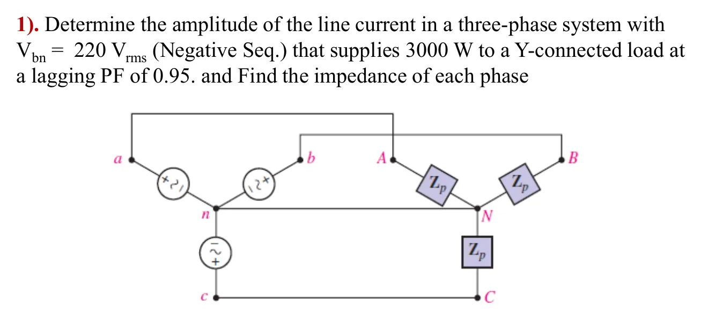

กำลังไฟฟ้าสามเฟสและวิธีวิเคราะห์ทีละเฟส Three-phase power and the per-phase method — one formula for Y and delta
Three-phase power and the per-phase method One formula for Y and delta
Hayt แสดงว่าโหลดวายมี \(P_p = V_pI_L\cos\theta = (V_L/\sqrt3)I_L\cos\theta\) และโหลดเดลตามี \(P_p = V_LI_p\cos\theta = V_L(I_L/\sqrt3)\cos\theta\) ทั้งสองแบบได้กำลังรวม \(P = 3P_p = \sqrt3\,V_LI_L\cos\theta\) เท่ากัน จึงหากำลังรวมได้จากค่าที่วัดที่สายได้ง่าย (แรงดันสายและกระแสสาย) โดยไม่ต้องรู้ว่าข้างในต่อแบบใด ข้อควรระวังคือ \(\theta\) ในสูตรคือมุมของอิมพีแดนซ์โหลด (มุมระหว่างแรงดันเฟสกับกระแสเฟสของโหลด) ไม่ใช่มุมระหว่าง \(\mathbf{V}_{ab}\) กับ \(\mathbf{I}_{aA}\) ซึ่งต่างกัน 30° หน้านี้รวมทุกอย่างเป็นวิธีทีละเฟสห้าขั้นในเครื่องคิดเลข (ส่วน A) ตารางสรุปของสไลด์หน้า 19 (ส่วน B) และการบ้านสไลด์หน้า 20 (ข้อ 1)
Hayt shows that a Y load has \(P_p = V_pI_L\cos\theta = (V_L/\sqrt3)I_L\cos\theta\) and a delta load \(P_p = V_LI_p\cos\theta = V_L(I_L/\sqrt3)\cos\theta\): both give the same total \(P = 3P_p = \sqrt3\,V_LI_L\cos\theta\), so the total power follows from quantities that are easy to measure on the lines (line voltage and line current) without knowing how the load is connected inside. Watch out: \(\theta\) is the angle of the load impedance (between the phase voltage and the phase current of the load), not the angle between \(\mathbf{V}_{ab}\) and \(\mathbf{I}_{aA}\), which differs by 30°. This page gathers everything into a five-step per-phase calculator (section A), the summary table of slide p. 19 (section B) and the homework of slide p. 20 (problem 1).
ประเด็นสำคัญของหน้านี้
- \(P = \sqrt3\,V_LI_L\cos\theta\) ใช้ได้ทั้งโหลดวายและเดลตา และ \(Q = \sqrt3V_LI_L\sin\theta\), \(|\mathbf{S}| = \sqrt3V_LI_L\) สามเหลี่ยมกำลังของบทที่ 8 ใช้กับกำลังรวมได้เลย
- \(\theta\) คือมุมของ \(Z_p\) หรือมุมระหว่างแรงดันเฟสกับกระแสเฟสของโหลด (บวกเมื่อตามหลัง ลบเมื่อนำหน้า) และตัวประกอบกำลัง (power factor, PF) คือ \(\cos\theta\)
- วิธีทีละเฟส 5 ขั้น: (1) แรงดันเฟสของโหลด วาย \(V_L/\sqrt3\) เดลตา \(V_L\) (2) \(P_p = P/3\) (3) \(I_p = P_p/(V_p\cos\theta)\) (4) กระแสสาย วาย \(I_p\) เดลตา \(\sqrt3I_p\) (5) \(Z_p = (V_p/I_p)\angle\theta\)
- ลำดับเฟสไม่เปลี่ยนขนาดของกระแส กำลัง หรืออิมพีแดนซ์ เปลี่ยนเฉพาะมุมของเฟส b และ c (ข้อ 1)
- ตารางสรุปของสไลด์หน้า 19 คัดมาจาก Hayt ซึ่งหัวคอลัมน์สุดท้ายเขียนว่า "Power per Phase" แต่สูตร \(\sqrt3V_LI_L\cos\theta\) คือกำลังรวมทั้งสามเฟส
Key points of this page
- \(P = \sqrt3\,V_LI_L\cos\theta\) holds for Y and delta loads alike, with \(Q = \sqrt3V_LI_L\sin\theta\) and \(|\mathbf{S}| = \sqrt3V_LI_L\): the power triangle of chapter 8 applies to the totals directly.
- \(\theta\) is the angle of \(Z_p\), the angle between the load's phase voltage and phase current (positive when lagging, negative when leading), and the power factor (PF) is \(\cos\theta\).
- Five per-phase steps: (1) load phase voltage, Y \(V_L/\sqrt3\), delta \(V_L\); (2) \(P_p = P/3\); (3) \(I_p = P_p/(V_p\cos\theta)\); (4) line current, Y \(I_p\), delta \(\sqrt3I_p\); (5) \(Z_p = (V_p/I_p)\angle\theta\).
- The phase sequence does not change the size of any current, power or impedance; it only changes the angles of phases b and c (problem 1).
- The summary table of slide p. 19 is copied from Hayt, whose last column is headed "Power per Phase" although \(\sqrt3V_LI_L\cos\theta\) is the total power of all three phases.
เครื่องคิดเลขวิธีทีละเฟส
The per-phase calculator
เลือกการต่อโหลด ใส่แรงดันสาย กำลังรวม และตัวประกอบกำลัง แล้ววงจรจะใช้อิมพีแดนซ์ที่คำนวณได้ จุดในสายวิ่งด้วยกระแสสายที่คำนวณพอดี ระนาบด้านล่างซ้ายคือสามเหลี่ยมของกำลังรวม กราฟแสดงแรงดันเฟสกับกระแสเฟสของโหลดเฟสหนึ่ง (วาย: \(v_{AN}, i_{AN}\) · เดลตา: \(v_{AB}, i_{AB}\)) ซึ่งห่างกันเป็นมุม \(\theta\) ในสูตร ปุ่มด้านข้างใส่ค่าของโจทย์ในหน้า 9.2–9.3 ให้ และใต้แผงควบคุมคือห้าขั้นจากค่าปัจจุบัน
Choose the load connection, enter the line voltage, the total power and the power factor; the circuit then uses the impedance found, and its dots run with exactly the calculated line current. The lower-left panel is the power triangle of the totals; the graph shows the phase voltage and phase current of one load phase (Y: \(v_{AN}, i_{AN}\) · delta: \(v_{AB}, i_{AB}\)), which are the angle \(\theta\) of the formula apart. The buttons enter the problems of pages 9.2–9.3, and the five steps for the current settings are under the controls.
ตารางสรุป: โหลดวายเทียบกับโหลดเดลตา
Summary table: Y loads compared with delta loads
![Slide 19, Summary: comparison of Y- and Δ-connected three-phase loads, Vp is the voltage magnitude of each Y-connected source phase; Y load: phase voltages VAN = Vp∠0°, VBN = Vp∠−120°, VCN = Vp∠−240°; line voltages VAB = Vab = (√3∠30°)VAN = √3Vp∠30°, VBC = √3Vp∠−90°, VCA = √3Vp∠−210°; phase and line currents IaA = IAN = VAN/Zp, IbB = IBN = VBN/Zp, IcC = ICN = VCN/Zp; Δ load: phase voltages VAB = Vab = √3Vp∠30°, VBC = √3Vp∠−90°, VCA = √3Vp∠−210°, equal to the line voltages; phase currents IAB = VAB/Zp, IBC = VBC/Zp, ICA = VCA/Zp; line currents IaA = (√3∠−30°)VAB/Zp, IbB = (√3∠−30°)VBC/Zp, IcC = (√3∠−30°)VCA/Zp; the last column, headed Power per Phase: √3VLIL cos θ, where cos θ = power factor of the load](slides/ch9/p19.webp)
โหลดสมดุล ต่อกับแหล่งจ่ายวายที่มีแรงดันเฟส \(V_p\) ลำดับบวก
| โหลด | แรงดันคร่อมแต่ละเฟสของโหลด | แรงดันสาย | กระแสเฟส | กระแสสาย | กำลังรวม |
|---|---|---|---|---|---|
| วาย (Y) | \(\mathbf{V}_{AN} = V_p\angle 0^\circ\) \(\mathbf{V}_{BN} = V_p\angle{-120^\circ}\) \(\mathbf{V}_{CN} = V_p\angle{-240^\circ}\) | \(\mathbf{V}_{AB} = \sqrt3\angle 30^\circ\,\mathbf{V}_{AN}\) \(= \sqrt3V_p\angle 30^\circ\) | \(\mathbf{I}_{AN} = \mathbf{V}_{AN}/Z_p\) | \(\mathbf{I}_{aA} = \mathbf{I}_{AN}\) (เท่ากับกระแสเฟส) | \(\sqrt3V_LI_L\cos\theta\) \(\cos\theta\) = ตัวประกอบกำลังของโหลด |
| เดลตา (Δ) | \(\mathbf{V}_{AB} = \sqrt3V_p\angle 30^\circ\) \(\mathbf{V}_{BC} = \sqrt3V_p\angle{-90^\circ}\) \(\mathbf{V}_{CA} = \sqrt3V_p\angle{-210^\circ}\) | เท่ากับแรงดันคร่อมเฟส | \(\mathbf{I}_{AB} = \mathbf{V}_{AB}/Z_p\) | \(\mathbf{I}_{aA} = \sqrt3\angle{-30^\circ}\,\mathbf{I}_{AB}\) \(= \mathbf{I}_{AB} - \mathbf{I}_{CA}\) |
Balanced loads on a Y source of phase voltage \(V_p\), positive sequence
| Load | Voltage across each load phase | Line voltage | Phase current | Line current | Total power |
|---|---|---|---|---|---|
| Y | \(\mathbf{V}_{AN} = V_p\angle 0^\circ\) \(\mathbf{V}_{BN} = V_p\angle{-120^\circ}\) \(\mathbf{V}_{CN} = V_p\angle{-240^\circ}\) | \(\mathbf{V}_{AB} = \sqrt3\angle 30^\circ\,\mathbf{V}_{AN}\) \(= \sqrt3V_p\angle 30^\circ\) | \(\mathbf{I}_{AN} = \mathbf{V}_{AN}/Z_p\) | \(\mathbf{I}_{aA} = \mathbf{I}_{AN}\) (equal to the phase current) | \(\sqrt3V_LI_L\cos\theta\) \(\cos\theta\) = power factor of the load |
| Delta (Δ) | \(\mathbf{V}_{AB} = \sqrt3V_p\angle 30^\circ\) \(\mathbf{V}_{BC} = \sqrt3V_p\angle{-90^\circ}\) \(\mathbf{V}_{CA} = \sqrt3V_p\angle{-210^\circ}\) | equal to the phase voltage | \(\mathbf{I}_{AB} = \mathbf{V}_{AB}/Z_p\) | \(\mathbf{I}_{aA} = \sqrt3\angle{-30^\circ}\,\mathbf{I}_{AB}\) \(= \mathbf{I}_{AB} - \mathbf{I}_{CA}\) |
การบ้าน: หาขนาดของกระแสสายเมื่อ \(\mathbf{V}_{bn} = 220\) V rms (ลำดับลบ) จ่าย 3000 W ให้โหลดวายที่ตัวประกอบกำลัง 0.95 ตามหลัง และหาอิมพีแดนซ์ของแต่ละเฟส
Homework: find the amplitude of the line current when \(\mathbf{V}_{bn} = 220\) V rms (negative sequence) supplies 3000 W to a Y load at a lagging PF of 0.95, and the impedance of each phase

โจทย์ให้ \(\mathbf{V}_{bn}\) แทน \(\mathbf{V}_{an}\) และเป็นลำดับลบ แต่ระบบสมดุลมีแรงดันเฟสขนาดเท่ากันทุกตัว ขนาดของกระแสและอิมพีแดนซ์จึงไม่ขึ้นกับลำดับเฟส ภาพจำลองแสดงแรงดันเฟสลำดับลบก่อน แล้วสามเหลี่ยมของกำลังรวม จุดเริ่มวิ่งเมื่อได้กระแสสาย และ \(Z_p\) บนวงจรแสดงเป็น "? Ω" จนถึงขั้นที่หา ลองตอบก่อน
The problem gives \(\mathbf{V}_{bn}\) instead of \(\mathbf{V}_{an}\), in negative sequence, but every phase voltage of a balanced system has the same size, so the sizes of the current and the impedance do not depend on the sequence. The simulation first shows the negative-sequence phase voltages, then the triangle of the total power; the dots start once the line current is known, and \(Z_p\) on the circuit shows "? Ω" until the step that finds it. Try it first.
ฝึกเพิ่ม
More practice
ลองทำดู 1 — วายหรือเดลตาได้กำลังเท่ากัน
- ส่วน A กด "Ex 2" แล้วสลับเป็นเดลตา: \(I_L\) เท่าเดิม 2.887 A แต่ \(Z_p\) โตขึ้นสามเท่าเป็น 180 Ω
- สูตร \(P = \sqrt3V_LI_L\cos\theta\) จึงไม่ต้องรู้การต่อภายในโหลด
- ดูกราฟ: แรงดันเฟสกับกระแสเฟสห่างกันเป็นมุม \(\theta\) เสมอ ไม่ว่าวายหรือเดลตา
ลองทำดู 2 — มุม θ ไม่ใช่มุมระหว่าง V_L กับ I_L
- ตั้งตัวประกอบกำลังเป็น 1 (โหลดตัวต้านทาน) โหลดวาย: \(\mathbf{V}_{ab}\) ยังนำหน้า \(\mathbf{I}_{aA}\) อยู่ 30°
- ถ้าเอา 30° นี้ไปใส่ในสูตร จะได้กำลังผิดไป \(\cos 30^\circ = 0.866\) เท่า
- สรุป: ใช้มุมของอิมพีแดนซ์โหลดเสมอ (ฝึกเพิ่มข้อ 5)
ลองทำดู 3 — ลำดับเฟส
- ส่วน A กด "แบบทดสอบปี 2560" แล้วสลับลำดับเฟส: ขนาดของทุกค่าเท่าเดิม เปลี่ยนเฉพาะมุมของเฟส b และ c
- ข้อ 1 ให้ \(\mathbf{V}_{bn}\) แทน \(\mathbf{V}_{an}\) ก็ไม่ต่างกัน เพราะในระบบสมดุลแรงดันเฟสทุกตัวมีขนาด \(V_p\) เท่ากัน
- ลำดับเฟสจะสำคัญเมื่อถามมุม หรือเมื่อโหลดไม่สมดุล (หน้า 9.2 ส่วน A)
Try this 1 — Y or delta, the same power
- In section A press "Ex 2", then switch to delta: \(I_L\) stays 2.887 A, but \(Z_p\) grows three times to 180 Ω.
- So \(P = \sqrt3V_LI_L\cos\theta\) needs no knowledge of the connection inside the load.
- Look at the graph: the phase voltage and phase current are always \(\theta\) apart, Y or delta.
Try this 2 — θ is not the angle between V_L and I_L
- Set the power factor to 1 (a resistive load) with a Y load: \(\mathbf{V}_{ab}\) still leads \(\mathbf{I}_{aA}\) by 30°.
- Putting that 30° into the formula would make the power wrong by a factor \(\cos 30^\circ = 0.866\).
- Conclusion: always use the angle of the load impedance (practice question 5).
Try this 3 — phase sequence
- In section A press "2017 quiz" and switch the phase sequence: every size stays the same; only the angles of phases b and c change.
- Problem 1 gives \(\mathbf{V}_{bn}\) instead of \(\mathbf{V}_{an}\), which changes nothing either, since every phase voltage of a balanced system has the size \(V_p\).
- The sequence matters when angles are asked for, or when the load is unbalanced (page 9.2, section A).